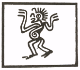

___________________________________
CHAPTER 5: THE PIONEERS
1. HUNG MUNG
A Sage of Ancient China and Official Discordian Missionary to the Heathen Chinese. He who originally devised THE SACRED CHAO. Patron of the Season of Chaos. Holyday: Jan 5.
2. DR. VAN VAN MOJO
A Head Doctor of Deep Africa and Maker of Fine Dolls. D.H.V., Doctor of Hoodoo and Vexes, from The Greater Metropolitan Yorba Linda Jesus Will Save Your Bod Home Study Bible School; and F.I.H.G.W.P., Fellow of the Intergalactic Haitian Guerrillas for World Peace. Patron of The Season of Discord. Holyday: Mar 19. NOTE: Erisians of The Laughing Christ sect are of the silly contention that Dr. Mojo is an imposter and that PATAMUNZO LINGANANDA is the True Second Apostle. Lord Omar claims that Dr. Mojo heaps hatred upon Patamunzo, who sends only Love Vibrations in return. But we of the POEE sect know that Patamunzo is the Real Imposter, and that those vibrations of his are actually an attempt to subvert Dr. Mojo's rightful apostilic authority by shaking them out of their wits.
3. SRI SYADASTI SYADAVAKTAVYA SYADASTI SYANNASTI SYADASTI CAVAKTAVYASCA SYADASTI SYANNASTI SYADAVATAVYASCA SYADASTI SYANNASTI SYADAVAKTAVYASCA
Commonly called just SRI SYADASTI.
His name is Sanskrit, and means: All affirmations are true in |